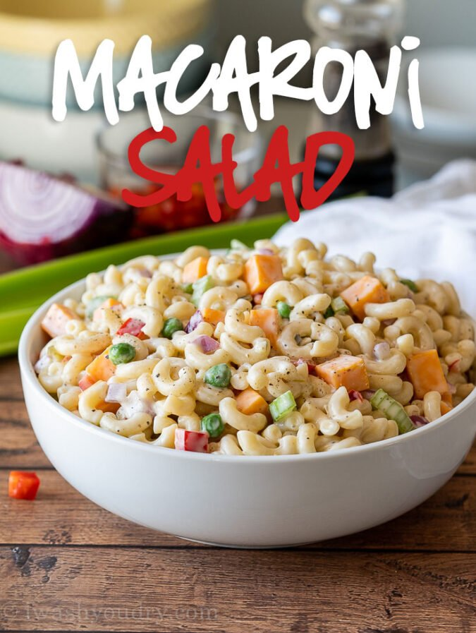

This Simple Macaroni Salad Recipe is filled with all the classic ingredients, tossed in a creamy sauce and perfect for potlucks and parties!
Ingredients
- 1 pound Elbow Macaroni Noodles (uncooked)
- ¼ cup Celery (diced)
- ¼ cup Red Onion (diced)
- ½ cup Red Bell Pepper (diced)
- ½ cup Peas (frozen)
- 1 cup Cubed Sharp Cheddar Cheese
- 1 cup Mayo
- ¼ cup Distilled Vinegar
- 3 tablespoons Sugar
- 1 tablespoon Dijon Mustard
- 2 tablespoons Sweet Pickle Relish
- 1 teaspoon Salt
- ½ teaspoon Black Pepper
Steps
- Cook the noodles according to package instructions, then drain and rinse with cool water. I like to add a few ice cubes to the noodles while running cool water over them to help cool the noodles faster. Drain and add pasta to a large bowl.
- Add in the diced celery, red onion, red bell pepper, peas and cheese.
- Whisk together the dressing mayo, vinegar, sugar, mustard,pickle relish, salt and pepper in a small bowl until smooth and creamy.
- Pour the dressing into the large bowl and stir to coat evenly. Keep the salad covered and refrigerated until ready to serve. Enjoy!
Return to main Page